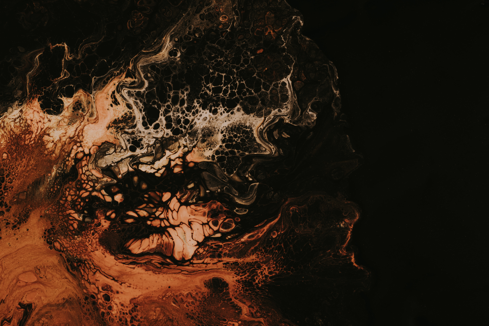

INSTITUTO SILVERTONE DE ARTE Y HECHICERIA
El Instituto Silverstone de Arte y Hechicería es una escuela única en su tipo, que combina el arte y la magia para crear un espacio de aprendizaje dinámico e innovador. En el Instituto Silverstone, los estudiantes tienen la oportunidad de aprender de los mejores expertos en arte, diseño y magia. Nuestros programas de estudio están diseñados para desarrollar las habilidades y la confianza necesarias para tener éxito en cualquier campo.
EVENTOS
Epistemologia Arcana
Sab. 23 de Noviembre
Auditorio 5 - Ala Oeste
